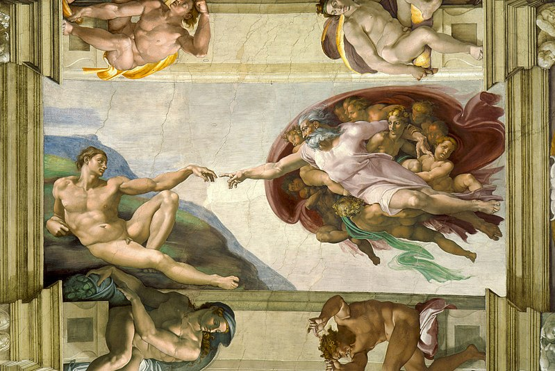
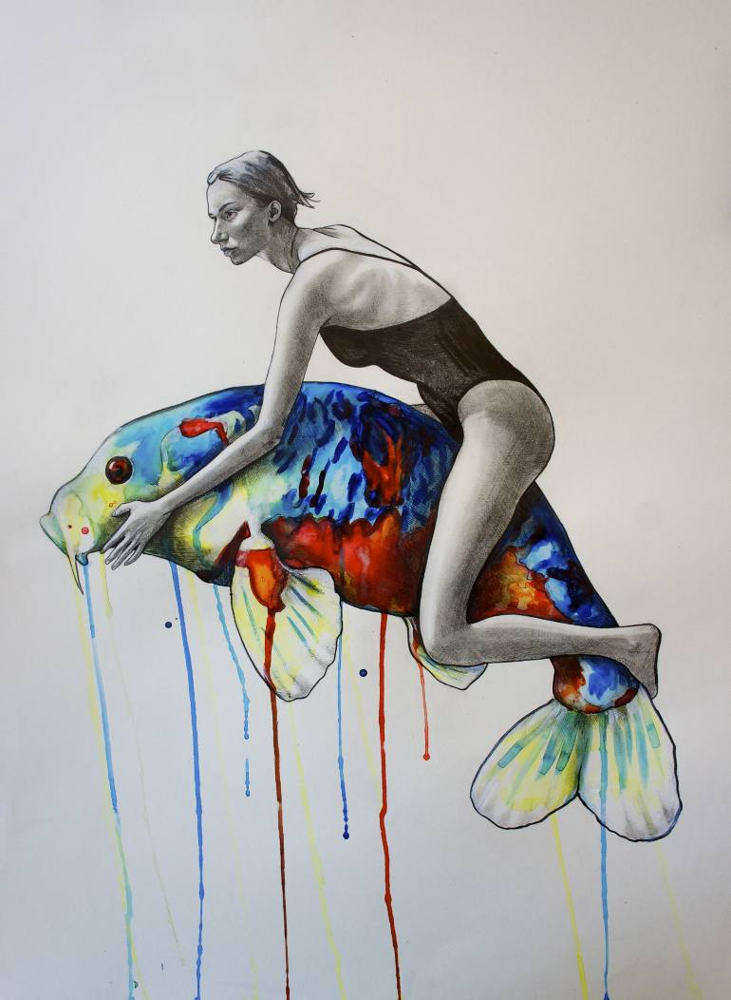

The history of art focuses on objects made by humans in visual form for aesthetic purposes.
The history of art is often told as a chronology of masterpieces created during each civilization. It can thus be framed as a story of high culture, epitomized by the Wonders of the World. On the other hand, vernacular art expressions can also be integrated into art historical narratives, referred to as folk arts or craft.

Many people often wonder why art is important, and the truth is that there is no simple answer to this. Art exists in our life in many different forms, and impacts our character and development in numerous ways.
